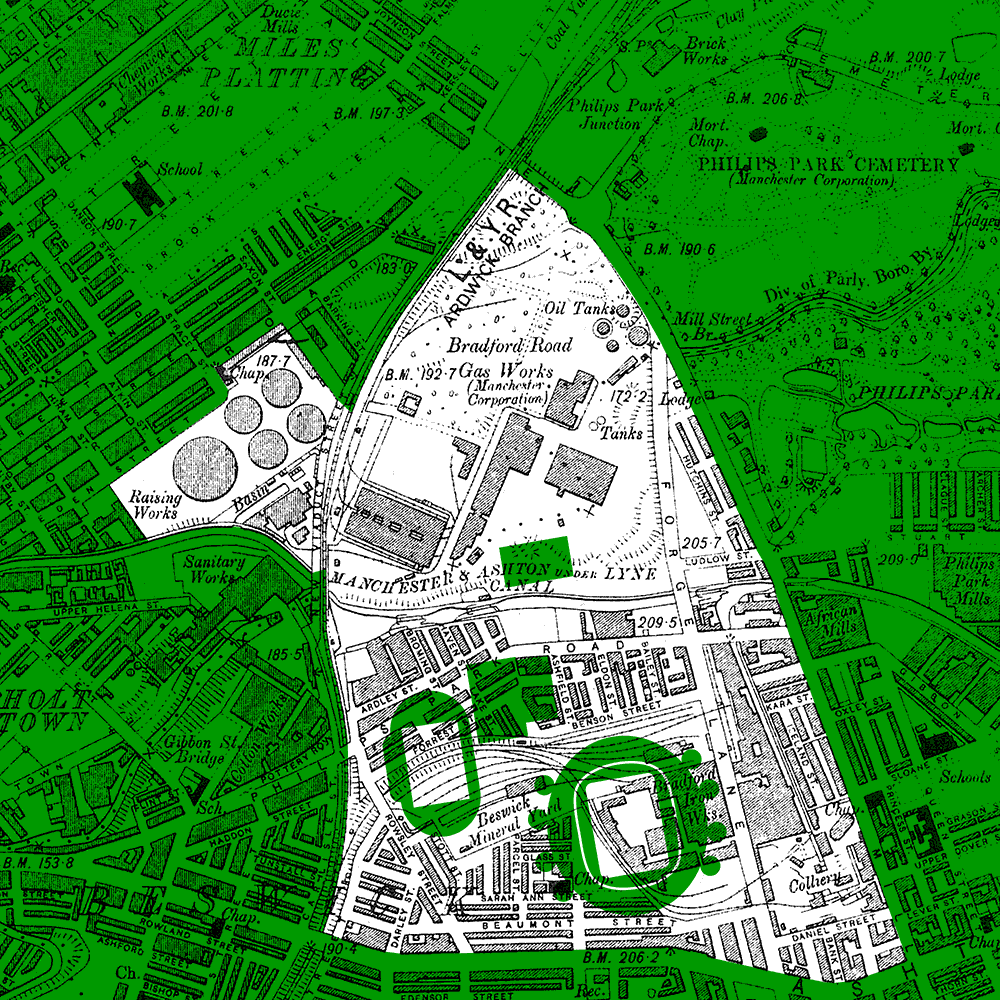
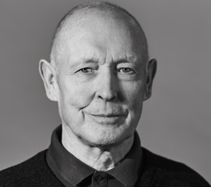

The Bradford Pit Project commemorates the colliery that used to stand on the site now occupied by Sportcity and the Etihad Stadium.
It was set up to ensure that the people and places that contributed to development of Manchester will be marked and celebrated.
The pit
Bradford Colliery was located on Forge Lane in the Bradford district of East Manchester, an area which these days is more commonly referred to as Beswick or Eastlands.
News
Updates about the project's activities
Archive
Delve into the archives collected by the project
The miners

“Even when you'd have a shower, round your eyes would be dirty - you looked like you were wearing mascara”
“If you had an accident, you were reliant on your mates to get you out on a stretcher”